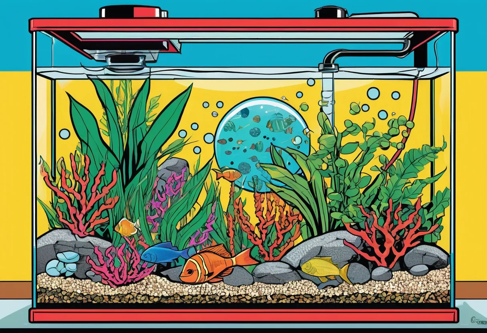

Warum ein Aquarium?
Ein Aquarium ist nicht nur ein dekoratives Wohnaccessoire – es ist ein lebendiges Ökosystem, das Ruhe und Ausgeglichenheit in dein Zuhause bringt. Die Beobachtung von Fischen und Pflanzen wirkt nachweislich stressreduzierend und lehrt Verantwortung. Doch der Einstieg will gut geplant sein.
Die richtige Beckengröße
Als Anfänger solltest du nicht zu klein starten. Ein 60-Liter-Becken (60 × 30 × 30 cm) gilt als ideale Einstiegsgröße. Kleineren Becken fehlt oft die Stabilität des Wasserkreislaufs, größere sind teurer in der Anschaffung.
Unsere Empfehlung: Starte mit mindestens 60 Litern. So hast du genug Spielraum für erste Gestaltungsideen und eine stabile Wasserqualität.
Technik: Was du brauchst
Diese technischen Komponenten sind für jedes Aquarium unverzichtbar:
- Filter – Für biologische und mechanische Reinigung. Ein Außenfilter ist leistungsstärker und unauffälliger.
- Heizung – Meist 50–100 Watt, je nach Beckengröße. Zieltemperatur: 24–26 °C für die meisten Gesellschaftsbecken.
- Beleuchtung – LED-Beleuchtung mit Tageslichtspektrum. Wichtig für Pflanzenwachstum und Wohlbefinden der Fische.
- Thermometer – Zur Kontrolle der Wassertemperatur.
- Kescher, Algenmagnet, Schere – Für die tägliche Pflege.
🛒 Empfohlene Einsteiger-Sets
Diese Komplettsets enthalten alles, was du für den Start brauchst – Becken, Filter, Heizung und Beleuchtung in einem Paket.
👉 Komplettsets bei Amazon ansehenDer richtige Standort
Stelle dein Aquarium nicht direkt ans Fenster – zu viel Sonnenlicht führt zu Algenwachstum und Temperaturschwankungen. Ein stabiler, ebener Untergrund ist Pflicht. Bedenke: Ein 60-Liter-Becken wiegt mit Einrichtung rund 80 kg!
Einrichtung Schritt für Schritt
1. Bodengrund
Nährstoffreicher Soil oder Kies? Für bepflanzte Aquarien empfehlen wir Nährboden (Soil), der das Pflanzenwachstum fördert und Wasserwerte puffert.
2. Hardscape
Wurzeln und Steine bilden das Grundgerüst deines Aquariums. Achte darauf, dass alle Dekorationsgegenstände aquariumgeeignet sind (keine scharfen Kanten, kein Kalkstein für Weichwasser-Fische).
3. Bepflanzung
Starte mit pflegeleichten Pflanzen wie Anubias, Javafarn oder Vallisnerien. Sie kommen mit wenig Licht aus und wachsen zuverlässig.
4. Einfahren (Aquarium einfahren)
Das Einfahren dauert 4–6 Wochen. Während dieser Zeit baut sich die nützliche Bakterienkultur im Filter auf. Füge erst nach abgeschlossener Stickstoffumwandlung die ersten Fische hinzu.
Geduld ist die wichtigste Eigenschaft eines Aquarianers. Das Einfahren lässt sich nicht beschleunigen – aber mit Bakterienkulturen aus dem Handel kannst du den Prozess unterstützen.
Erster Besatz
Nach erfolgreichem Einfahren beginnt der spannendste Teil: der Fischbesatz. Starte mit einer kleinen Gruppe friedlicher Fische:
- Neonsalmler (Paracheirodon innesi) – 8–10 Tiere
- Guppys (Poecilia reticulata) – 3–5 Tiere
- Panzerwelse (Corydoras) – 5–6 Tiere
Wichtig: Setze Fische langsam und in kleinen Gruppen ein, damit der Filter nicht überlastet wird.
🛒 Fischfutter & Pflegeprodukte
Hochwertiges Futter und Wasserpflegeprodukte sind der Schlüssel zu gesunden Fischen und klarem Wasser.
👉 Pflegeprodukte bei Amazon entdeckenRegelmäßige Pflege
Ein Aquarium braucht wöchentliche Zuwendung: 20–30 % Wasserwechsel, Filterreinigung, Algenkontrolle und Düngung. Mit einem festen Rhythmus bleibt dein Aquarium dauerhaft schön und gesund.
Fazit
Die Einrichtung eines Aquariums ist eine bereichernde Erfahrung, die Planung und Geduld erfordert. Mit der richtigen Vorbereitung, hochwertiger Technik und regelmäßiger Pflege wirst du lange Freude an deinem Unterwasserparadies haben. Starte mit einem 60-Liter-Becken, pflegeleichten Pflanzen und einer kleinen Gruppe friedlicher Fische – alles Weitere kommt mit der Erfahrung.
Hast du Fragen oder Ergänzungen? Schreib uns eine Nachricht – wir helfen gerne weiter!